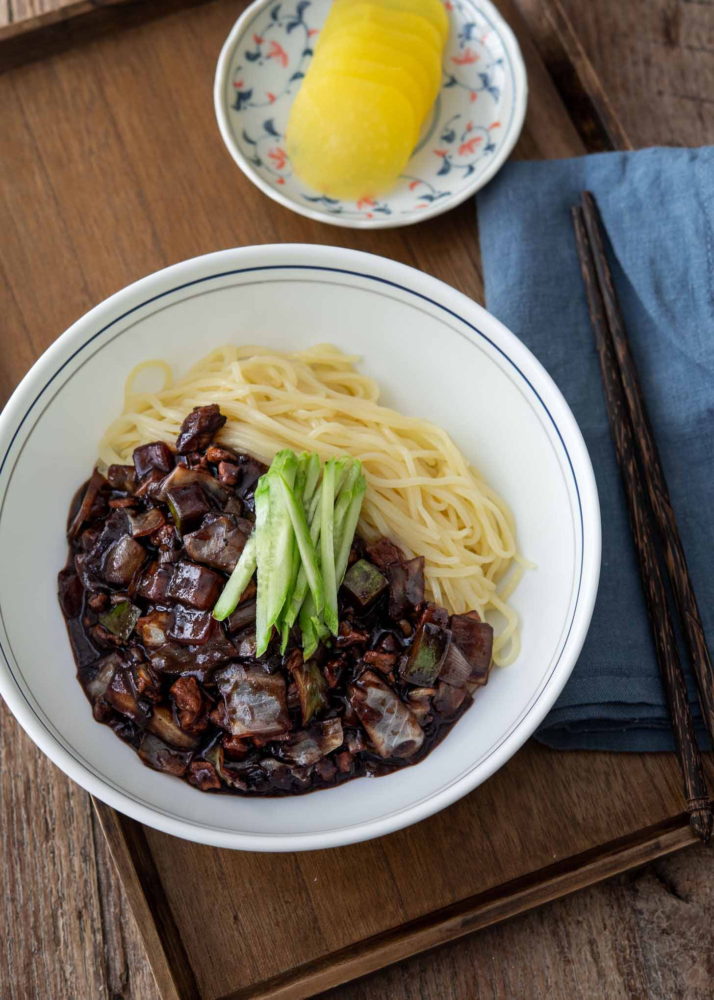

Jajangmyeon - Black Bean Noodles
created by Adam Ryu (reference of Beyond Kimchee by Holly Ford)

Description:
A popular Korean-Chinese noodle dish consiting of chewy wheat noodles in a deep, savory and sweet sauce made from chunjang, a fermented Korean black soybean paste.
Ingredients:
Essentials
- Pork (loin or shoulder cuts are best)
- Wheat noodles
- Chunjang (korean variety)
- Lard or oil
- Green onion
- Onions
- Cabbage
- Zucchini
- Cucumber
- Sugar
Additional
- Oyster sauce
- Cornstarch Slurry
- Chicken bouillon powder
5 Easy Steps:
Prep Chunjang
- Heat some oil or lard in a wok on medium-low, then add the chunjang paste. Stir fry for 2-3 minutes.
- Use a fine mesh strainer to transfer the paste to a small plate and set aside. Give the wok a quick clean.
Cooking Meat and Aromatics
- Warm up lard or oil in the wok over medium-high. Toss in green onions and sugar stir-frying until green onion begins to carmelize.
- Add pork and continue cooking untl fully cooked.
Stir-fry Vegetables
- Add cabbage and onion to the wok, cooking them until they soften. Add in zuchini pieces and stir everything.
- Blend in the set-aside paste and oyster sauce, ensuring all ingredients are being coated.
Thickening the Sauce
- Add water and chicken bouillon powder, stirring thoroughly. Bring sauce to a boil and cook for 3 minutes.
- Add slurry and cook until sauce has become thicker.
Final Steps
- Boil the noodles, adding cold water each time the water reaches a rolling boil to achieve cheweier noodles.
- Once cooked, drain and divide into bowls and mix in the sauce to serve. Top with sliced cucumbers.
Congratultions! You have just made Jajangmyeon. Enjoy!